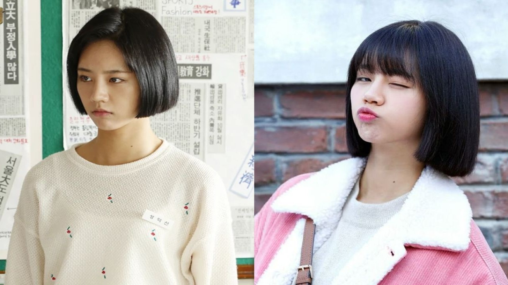

Actress Hyeri Announces Pregnancy Just 8 Months After Dating Confirmation

Beloved actress Lee Hyeri, best known for her iconic role as Sung Deok-sun in the hit drama "Reply 1988," is expecting her first child with musician boyfriend Woo Tae-woon, better known by his stage name Wootae. The unexpected announcement came just eight months after the couple confirmed their relationship, surprising fans and sparking an outpouring of congratulations across social media.
The pregnancy was revealed in an unconventional manner on March 21, when Hyeri's younger sister Lee Hye-rim posted a heartfelt message on her Instagram account. The post included several photos and a touching caption that immediately caught fans' attention.
"Little baby, you cracked open your shell and came to us, now we're coming to you!! 🐣💛" Hye-rim wrote, using a baby chick emoji that Korean netizens immediately interpreted as a pregnancy announcement. The post was liked tens of thousands of times within hours as the news spread through fan communities and media outlets.
The Timeline: A Whirlwind Romance
Hyeri, 31, and Wootae, 33, first sparked dating rumors in July 2025 when they were photographed together at a private gathering. Initial speculation was met with neither confirmation nor denial from either party's representatives, leading to weeks of intense fan investigation and media scrutiny.
The relationship was officially confirmed in August 2025 when Hyeri's agency, Sublime Entertainment, issued a carefully worded statement acknowledging the romance while requesting privacy. "We ask for your understanding as it is difficult to confirm details as it concerns the actress's private life," the agency said at the time, a response that many interpreted as soft confirmation.
Since then, the couple has maintained a relatively low profile, rarely appearing together in public and keeping their relationship largely out of the spotlight. The pregnancy announcement has therefore come as a significant surprise to fans who had assumed the relationship was still in its early stages.
The eight-month gap between dating confirmation and pregnancy announcement has sparked discussion among Korean netizens, with some calculating that conception would have occurred very early in the publicly known relationship. Others have speculated that the couple may have been dating privately for much longer before their relationship became public knowledge.
Who Is Wootae?
Woo Tae-woon, known professionally as Wootae, is a South Korean musician, producer, and DJ who has been active in the Korean hip-hop and electronic music scenes for over a decade. He is perhaps best known as the older brother of Zico, the former Block B member and current solo artist who has become one of K-pop's most successful rapper-producers.
Unlike his younger brother's mainstream pop career, Wootae has pursued a more underground path, focusing on production work and DJ performances rather than seeking celebrity status. He has produced tracks for various Korean artists and maintains a loyal following in Seoul's club scene.
The 33-year-old has generally stayed out of the entertainment media spotlight, making his relationship with high-profile actress Hyeri all the more surprising to industry observers. Friends of the couple have described them as a good match, with Hyeri's bubbly personality complementing Wootae's more reserved nature.
Hyeri's Journey: From Girl's Day to Dramatic Success
Hyeri rose to fame as a member of the K-pop girl group Girl's Day, which debuted in 2010 under Dream T Entertainment. While the group achieved considerable success with hits like "Something" and "Darling," it was Hyeri's individual viral moment—her "Aegyo" (cute expressions) on variety shows—that first brought her widespread recognition.
Her transition to acting proved even more successful. Hyeri's breakout role came in 2015's "Reply 1988," a critically acclaimed tvN drama that became one of the highest-rated shows in Korean cable television history. Her portrayal of Sung Deok-sun, a spirited teenager navigating life in 1988 Seoul, earned her numerous awards and cemented her status as a serious actress.
Since then, Hyeri has appeared in several successful dramas including "Two Cops" (2017), "My Roommate Is a Gumiho" (2021), and most recently "Waikiki" Season 3 (2025). Her natural charm and comedic timing have made her a favorite among Korean audiences, while her willingness to take on diverse roles has earned critical respect.
With Girl's Day effectively disbanded (though never officially announced), Hyeri has focused entirely on her acting career in recent years. The pregnancy announcement raises questions about her upcoming work schedule, though no official statements have been made regarding any project delays or cancellations.
Agency Response: Respecting Privacy
Following the pregnancy revelation through Hyeri's sister's social media post, both Hyeri's agency and Wootae's representatives have maintained careful silence on the details. Sublime Entertainment issued a brief statement on Monday requesting understanding from media and fans.
"We ask for your consideration and respect for the actress's private matters," the agency said. "We will provide updates on her professional activities as appropriate. We request that speculation about personal details be kept to a minimum."
The statement notably did not confirm or deny specific details about the pregnancy, due date, or any plans the couple might have. Industry observers note that this approach is typical for Korean entertainment companies, which tend to handle personal matters with extreme discretion.
No statement has been issued regarding whether Hyeri and Wootae plan to marry before the child's birth, though Korean social norms traditionally favor marriage preceding parenthood. Some fans have speculated that a private wedding ceremony may have already taken place, though this remains unconfirmed.
Fan Reactions: Mostly Positive, With Some Concern
The pregnancy announcement has generated largely positive reactions from Hyeri's fanbase, with many expressing excitement at the news and wishing the couple well. Social media has been flooded with congratulatory messages, fan art, and compilations of Hyeri's most heartwarming moments.
"Our Deok-sun is going to be a mom! I'm crying happy tears," wrote one fan on Twitter, referencing Hyeri's Reply 1988 character. "She's going to be the most amazing mother. I can already tell."
However, some fans have expressed concern about the rapid progression of the relationship and the timing of the pregnancy. Korean entertainment culture has historically been harsh toward female celebrities who become pregnant outside of marriage or before establishing long-term relationships, though attitudes have gradually shifted in recent years.
"I'm happy for her, but I hope she's making this decision for herself and not because of circumstances," one cautious commenter wrote. "Either way, I'll support her no matter what."
The vast majority of responses have been supportive, reflecting both Hyeri's strong public image and changing attitudes toward celebrity relationships in Korean society.
What's Next for Hyeri
Hyeri currently has no announced upcoming drama projects, which may have been intentional given the pregnancy. Her last major role was in "Waikiki" Season 3, which aired in late 2025 to positive reviews.
Industry insiders suggest that Hyeri may take a hiatus of at least a year to focus on her pregnancy and new motherhood, though this has not been officially confirmed. Korean actresses who become mothers often face challenging decisions about balancing family responsibilities with career demands, though the industry has become somewhat more accommodating in recent years.
For now, fans are simply celebrating the happy news and hoping for more updates as Hyeri's pregnancy progresses. The announcement has provided a bright spot amid the more contentious news cycles dominating K-entertainment headlines this week.
Congratulations to Hyeri and Wootae on their upcoming addition to the family.
Hyeri's previous works, including "Reply 1988" and "My Roommate Is a Gumiho," are available on various streaming platforms.